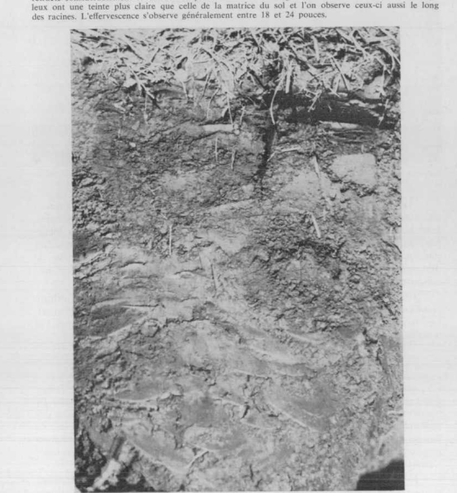
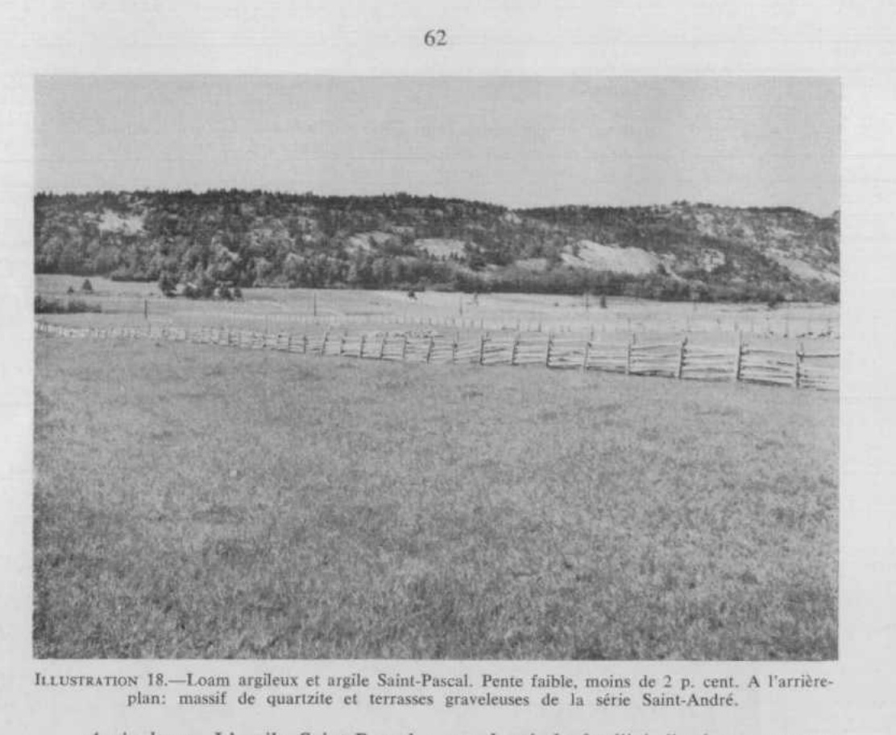

Identification & Caractéristiques Générales
Les sols de la série Saint-Pascal se sont développés dans des dépôts meubles argileux profonds, d'origine marine et de nature calcaire, communément désignés sous l'appellation locale d'argile rouge. La géomorphologie de ces secteurs se caractérise par des paysages de plaines ou de terrasses à topographie généralement plane à faiblement vallonnée, présentant des microreliefs en cuvettes. Les pentes associées à ces formations varient de façon générale entre 0,5 % et 9 %, incluant des secteurs à pente simple très faible de l'ordre de 0,6 % à 2 %.
Morphologiquement, le profil pédologique se distingue par une absence quasi totale de fragments grossiers, exception faite d'une faible proportion de graviers de lithologie variée n'excédant pas 10 %. L'horizon de surface (Ap), d'une épaisseur moyenne de 22 cm, est constitué de loam argileux, de loam limono-argileux ou d'argile, doté d'une structure polyédrique subangulaire fine à moyenne, à développement faible à modéré. En profondeur, le profil présente des signes prononcés d' hydromorphie : l'horizon sous-jacent (Bg ou Bmg) montre un gley et des marbrures très marquées, reposant sur un matériau parental (Ckg) très ferme à extrêmement massif et compact, dont la consistance s'apparente à du mastic. Cette compacité restreint fortement les transferts hydriques et gazeux, engendrant une perméabilité lente et un mauvais drainage naturel tant interne qu'externe. La nappe phréatique temporaire s'établit généralement à faible profondeur, aux environs de 20 à 30 cm, tandis que le front carbonaté est mesuré entre 40 et 90 cm de profondeur.
Sur le plan agronomique, les contraintes majeures de la série Saint-Pascal résident dans l'hydromorphie chronique, la compacité élevée du sous-sol et la lenteur de la perméabilité, ce qui rend le drainage souterrain conventionnel particulièrement difficile d'application. La régie de ces sols requiert des investissements soutenus en matière d'aménagement hydraulique de surface, notamment par le creusage de fossés d'assainissement et la mise en place de structures de type façonnage en planches afin d'évacuer l'excès d'eau printanier et estival. Le travail du sol exige un contrôle rigoureux du calendrier cultural et de la portabilité de la machinerie lourde pour prévenir les risques de compaction additionnelle et de détérioration de la structure. Ces terres sont principalement vouées aux cultures fourragères et aux grandes cultures, bien que leur productivité demeure subordonnée à l'efficacité des correctifs de drainage et à une gestion adaptée de la fertilisation minérale et organique.
Classification Taxonomique & Environnement Pédologique
| Ordre Pédologique | Gleysolique |
|---|---|
| Grand Groupe (SCSS) | Gleysol humique |
| Sous-Groupe Taxonomique | Gleysol humique orthique |
| Famille Pédologique | Argileuse-fine, mixte argileux, alcalin (calcaire) |
| Mode de Dépôt Parental | Estuarien |
| Classe de Drainage Naturel | Mal drainé |
| Régime Thermique & Humidité | Frais / Subaquique |
Description Morphologique du Profil Type
Séquences génétiques des horizons pédologiques caractérisant le profil type représentatif de la série Saint-Pascal :
Profil représentatif — Comté de Kamouraska
✓ Source : Comté de Kamouraska — Page 58Couleur Munsell : 10YR 3/1
Structure & Consistance : Granulaire à finement polyédrique bien développée
Description morphologique : Argile gris brun très foncé (10YR 3/1; 5/1, sec); ferme; structure granulaire à finement polyédrique bien développée; limites nettes et régulières; pH 5.7.
Couleur Munsell : 10Y 5/1
Structure & Consistance : Massive
Description morphologique : Argile grise (10Y 5/1; 7/1, sec); très ferme à plastique à l'état humide; structure massive; avec mouchetures très rares, très faibles, très fines et de couleur brune; pH 6.3.
Profil représentatif — Comté de Kamouraska
✓ Source : Comté de Kamouraska — Page 59Couleur Munsell : 7.5YR 4/2
Structure & Consistance : Très massive
Description morphologique : Argile lourde brun foncé (7.5YR 4/2; 6/2, sec); ferme à plastique; structure très massive; avec quelques faibles mouchetures fines de couleur brune et brun vif, avec quelques enduits argileux (clay skins) assez nets*, pH 6.7.
Couleur Munsell : 7.5YR 4/2
Structure & Consistance : Massive
Description morphologique : Argile lourde brun foncé (7.5YR 4/2; 6/2, sec), ferme à plastique, structure massive, avec quelques rares mouchetures, fait violemment effervescence à l'HCl dilué, pH 7.5.
Profil cultivé (agricole) — Comté de L'islet
✓ Source : Comté de L'islet — Page 43Couleur Munsell : 10YR 3/1
Structure & Consistance : Granulaire à finement polyédrique bien développée
Description morphologique : Argile gris très foncé à gris (10 YR 3/1 h; 5/1 s); ferme; structure granulaire à finement polyédrique bien développée; limites nettes et régulières; pH 5,7.
Couleur Munsell : 10YR 5/1
Structure & Consistance : Massive
Description morphologique : Argile grise à gris clair (10 YR 5/1 h; 7/1 s); très ferme à sec à plastique à l'état humide; structure massive; mouchetures rares, distinctes, fines et de couleur brune; pH 6,3.
Couleur Munsell : 5YR 4/2 (matrice), 10YR 6/2 (marbrures)
Structure & Consistance : Polyédrique à granulaire
Description morphologique : Argile lourde brun foncé (7,5 YR 4/2 h) à brun-gris pâle (10 YR 6/2 s); ferme à plastique; massive; mouchetures fréquentes, marquées, brunes à brun vif; enduits argileux rares; pH 6,7.
Couleur Munsell : 5YR 4/2 (matrice), 5YR 5/3 (marbrures)
Structure & Consistance : Polyédrique à granulaire
Description morphologique : Argile lourde brun foncé (7,5 YR 4/2 h) à brune (7,5 YR 5/3 s), ferme à plastique, massive; mouchetures rares, marquées; limite diffuse; pH 7,0.
Couleur Munsell : 5YR 3/2 (matrice), 10YR 5/2 (marbrures)
Structure & Consistance : Polyédrique à granulaire
Description morphologique : Argile lourde brun-gris foncé (7,5 YR 3/2 h) à gris-brun (10 YR 5/2 s), ferme à plastique, massive; rares mouchetures brunes, marquées; fait effervescence à l'HCl dilué; pH 7,5.
Profil cultivé (agricole) — Comté de Matane
✓ Source : Comté de Matane — Page 70Couleur Munsell : 10YR 3/2
Structure & Consistance : Polyédrique subangulaire
Description morphologique : Loam limono-argileux; brun grisâtre très foncé (10YR 3/2); structure polyédrique subangulaire, fine à moyenne, modérément développée; consistance friable; graviers, lithologie variée; limite abrupte, régulière; réaction moyennement acide.
Couleur Munsell : 10YR 4/1 (matrice), 10YR 5/6 (marbrures)
Structure & Consistance : Polyédrique subangulaire
Description morphologique : Loam limoneux; gris foncé (10YR 4/1); marbrures brun jaunâtre (10YR 5/6), nombreuses, moyennes, très marquées; structure polyédrique subangulaire, moyenne à grossière, faiblement développée; consistance ferme; graviers, lithologie variée; limite nette, interrompue; réaction neutre.
Couleur Munsell : 5Y 4/2
Structure & Consistance : Polyédrique subangulaire
Description morphologique : Argile limoneuse; brun grisâtre foncé (2,5Y 4/2); marbrures brun à brun vif (7,5YR 4,5/5), très nombreuses, petites à moyennes, très marquées; structure polyédrique subangulaire, moyenne à grossière, faiblement développée; consistance ferme; graviers, lithologie variée; limite nette, ondulée; réaction neutre.
Couleur Munsell : 10YR 4/4
Structure & Consistance : Polyédrique angulaire
Description morphologique : Argile limoneuse; gris foncé à gris (2,5Y 4,5/1); marbrures brun jaunâtre foncé (10YR 4/4), nombreuses, petites, très marquées; structure polyédrique angulaire, moyenne à grossière, modérément développée; consistance ferme; graviers, lithologie variée; limite graduelle; réaction faiblement alcaline.
Couleur Munsell : 5Y 5/1 (matrice), 10YR 4/4 (marbrures)
Structure & Consistance : Polyédrique angulaire
Description morphologique : Argile limoneuse; gris (2,5Y 5/1); marbrures brun jaunâtre foncé (10YR 4/4), nombreuses, petites à moyennes, très marquées; structure polyédrique angulaire, grossière à très grossière, faiblement à modérément développée; consistance très ferme; graviers, lithologie variée; limite graduelle; réaction modérément alcaline.
Couleur Munsell : 5Y 4/1 (matrice), 10YR 4/4 (marbrures)
Structure & Consistance : Polyédrique angulaire
Description morphologique : Argile limoneuse; gris foncé (2,5Y 4/1); marbrures brun jaunâtre foncé (10YR 4/4), nombreuses, petites à moyennes, très marquées; structure polyédrique angulaire, grossière, faiblement développée; consistance très ferme; graviers, lithologie variée; réaction modérément alcaline.
Profil cultivé (agricole) — Comté de Rimouski — Variante non calcaire
✓ Source : Comté de Rimouski — Page 112Couleur Munsell : 10YR 4/2
Structure & Consistance : Polyédrique subangulaire
Description morphologique : Loam argileux brun (10YR 4/2); structure polyédrique subangulaire, fine, modérément développée; consistance friable; limite abrupte, régulière; réaction faiblement acide.
Couleur Munsell : 10YR 4/1 (matrice), 10YR 4/6 (marbrures)
Structure & Consistance : Polyédrique angulaire
Description morphologique : Argile brun-gris foncé à gris foncé (10YR 4/1,5); marbrures brun-jaune foncé (10YR 4/6), très nombreuses, moyennes, très marquées; structure polyédrique angulaire, fine à moyenne, faiblement développée; consistance ferme; réaction neutre.
Couleur Munsell : 10YR 5/1 (matrice), 10YR 4/6 (marbrures)
Structure & Consistance : Polyédrique angulaire
Description morphologique : Argile grise (10YR 5/1); marbrures brun-jaune foncé (10YR 4/6), très nombreuses, petites, très marquées; structure polyédrique angulaire, fine, modérément développée; consistance ferme; quelques graviers fins et moyens; réaction neutre.
Couleur Munsell : 10YR 4/1
Structure & Consistance : Polyédrique à granulaire
Description morphologique : Argile gris foncé (10YR 4/1); marbrures brun-jaune foncé, très nombreuses, moyennes, très marquées, consistance ferme; quelques graviers fins à moyens; effervescence modérée au HCl dilué (10 %); réaction modérément alcaline.
Profil cultivé (agricole) — Comté de Rivière-du-loup
✓ Source : Comté de Rivière-du-loup — Page 39Couleur Munsell : 10YR 3/1
Structure & Consistance : Granulaire à finement polyédrique bien développée
Description morphologique : Argile gris très foncé à grise (10 YR 3/1h; 5/1 s); ferme; structure granulaire à finement polyédrique bien développée; limites nettes et régulières; pH 5,7.
Couleur Munsell : 10YR 5/1
Structure & Consistance : Massive
Description morphologique : Argile gris à gris clair (10 YR 5/1 h; 7/1 s); très ferme, à sec, à plastique, à l'état humide; structure massive; mouchetures rares, distinctes, fines et de couleur brune; pH 6,3.
Couleur Munsell : 7.5YR 4/2 (matrice), 10YR 6/2 (marbrures)
Structure & Consistance : Polyédrique à granulaire
Description morphologique : Argile lourde brun foncé (7.5 YR 4/2 h) à brun-gris pâle (10 YR 6/2 s); ferme à plastique; massive; mouchetures fréquentes, marquées, brunes à brun vif, enduits argileux rares; pH 6,7.
Couleur Munsell : 7.5YR 4/2 (matrice), 7.5YR 5/3 (marbrures)
Structure & Consistance : Polyédrique à granulaire
Description morphologique : Argile lourde brun foncé (7.5 YR 4/2 h) à brune (7.5 YR 5/3 s); ferme à plastique; massive; mouchetures rares, marquées; limite diffuse; pH 7,0.
Couleur Munsell : 7.5YR 3/2 (matrice), 10YR 5/2 (marbrures)
Structure & Consistance : Polyédrique à granulaire
Description morphologique : Argile lourde brun-gris foncé (7.5 YR 3/2 h) à gris-brun (10 YR 5/2 s); ferme à plastique; massive, rares mouchetures brunes, marquées; fait effervescence à l'HCl dilué; pH 7,5.
Profils Photographiques & Planches de Terrain
Documents iconographiques, figures pédologiques et coupes de terrain documentées dans les mémoires d'inventaire pour de la série Saint-Pascal :


Propriétés Physico-Chimiques & Analyses de Laboratoire
| Horizon | Prof. limite | pH (H₂O) | M.O. % | C tot. % | N tot. % | C.E.C. (cmol/kg) | Sable % | Limon % | Argile % | P Meh3 (mg/kg) | K (cmol/kg) | Ca (cmol/kg) | MVA (g/cm³) |
|---|---|---|---|---|---|---|---|---|---|---|---|---|---|
| Ap1 | 11.0 cm | 6.99 | 6.01 | 3.48 | 0.26 | 24.2 | 19.9 | 33.9 | 46.1 | 23.2 | 0.44 | 16.55 | 1.24 |
| Ap2 | 30.0 cm | 7.04 | 5.12 | 2.97 | 0.21 | 24.0 | 17.6 | 32.9 | 49.5 | 15.8 | 0.34 | 15.91 | 1.41 |
| B | — | 7.38 | 1.9 | 1.1 | 0.09 | 20.2 | 15.2 | 35.2 | 49.5 | 3.3 | 0.32 | 12.57 | 1.53 |
Particularités Régionales, Phases & Variantes Pédologiques
Déclinaisons régionales, faciès texturaux, phases d'érosion ou de pierrosité et variantes cartographiées par étude pour de la série Saint-Pascal :
| Étude Régionale | Symbole | Appellation / Phase / Variante | Différenciation avec la série type (Analyse pédologique) |
|---|---|---|---|
| Comté de Kamouraska | Pas |
Saint-Pascal argile | Modalité modale de référence (type de base de la série). |
| Comté de L'islet | Pas |
Saint-Pascal argile | Conforme à la série type de référence (caractéristiques texturales et drainage identiques). |
| Comté de Matane | PA4-B |
Saint-Pascal loam limono-argileux à argile pente simple de 0,6-2% | Conforme à la série type de référence (caractéristiques texturales et drainage identiques). |
PA4-b |
Saint-Pascal loam limono-argileux à argile pente complexe de 0,6-2% | Conforme à la série type de référence (caractéristiques texturales et drainage identiques). | |
PA4-bc |
Saint-Pascal loam limono-argileux à argile pente de 0,6-5% | Conforme à la série type de référence (caractéristiques texturales et drainage identiques). | |
PA4-c |
Saint-Pascal loam limono-argileux à argile pente de 3-5% | Phase de pente (3-5%) avec risque de ruissellement et d'érosion hydrique accrue. | |
PA4-d |
Saint-Pascal loam limono-argileux à argile pente de 6-9% | Phase de pente (6-9%) avec risque de ruissellement et d'érosion hydrique accrue. | |
| Comté de Rimouski | PA3 |
Saint-Pascal loam | Faciès à texture loameuse plus aérée et perméable que l'argile de référence (travail du sol plus aisé et meilleur égouttement). |
PA4 |
Saint-Pascal loam argileux | Faciès textural de surface loam argileux (distinct du argile de référence). | |
PA4h-B |
Saint-Pascal loam argileux humifère | Phase humifère enrichie en matière organique superficielle; Faciès textural de surface loam argileux (distinct du argile de référence). | |
PAn4 |
Saint-Pascal variante non calcaire loam argileux | Variante décarbonatée (non calcaire) à réaction plus acide; Faciès textural de surface loam argileux (distinct du argile de référence). | |
| Comté de Rivière-du-loup | Pas |
Saint-Pascal argile | Conforme à la série type de référence (caractéristiques texturales et drainage identiques). |
Pass |
Saint-Pascal loam sableux | Faciès sableux/loam sableux nettement plus grossier et perméable que l'argile modale. | |
| Îles d'Orléans, aux Coudres et aux Grues | SscB-1 |
Saint-Pascal argile 1 à 2% de pente pierrosité 1 | Conforme à la série type de référence (caractéristiques texturales et drainage identiques). |
| Étude pédologique des îles d'Orl | SSC |
Série Saint-Pascal (Ssc) | Conforme à la série type de référence (caractéristiques texturales et drainage identiques). |
Distribution Pédo-Paysagère & Représentativité Cartographique (Couverture PPS 2026)
- Saint-Philippe argile (SNE) — co-occurrente dans 40 polygone(s)
- Accumulations organiques (TNH) — co-occurrente dans 27 polygone(s)
- Kamouraska argile (KRK) — co-occurrente dans 7 polygone(s)
Aptitudes Agronomiques, Hydropédologie & Conservation des Sols
Indicateurs Hydropédologiques & Vulnérabilité à l'Érosion (BDHP 2026)
Interprétation BDHP : Potentiel de ruissellement modérément faible. Infiltration modérée avec textures moyennes à modérément grossières.
Classement selon l'Inventaire des Terres du Canada (ITC / CLI) : Classe 2w.
- Potentiel agricole : Terroir adapté aux cultures régionales selon la texture dominante et la régie de drainage.
- Contraintes majeures : Mal drainé. Risque d'engorgement temporaire ou d'excès d'eau printanier.
- Gestion & Aménagement : Drainage souterrain ou superficiel préconisé sur les terres planes. Chaulage et apport organique régulier selon les bilans agronomiques.
- Cultures adaptées : Grandes cultures (maïs, soya, céréales), prairies fourragères et cultures maraîchères selon le contexte géomorphologique.